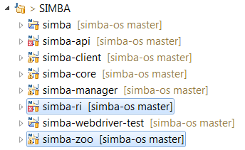

Want to contribute?
If you want to add features to Simba or improve something feel free to contribute! Just fork github repo and start changing. We look forward to your pull requests. Following steps will shows an overview of the project to indicate where you can adapt what:
Project structure
The simba-ri and simba-zoo projects are most likely your places to start from. Here's is the explanation of our multi-module maven project:

| simba | the parent pom |
|---|---|
| api | the gateway between Simba and the client application. Contains the thrift services. |
| client | contains the agent filter. Depends on api to talk to Simba. |
| ri | the reference implementation. An example of how to use Simba (the core and all it's features) that serves as a starting point to tweak your own Simba. |
| core | the heart of Simba: the chains, the commands, authentication, authorization, ... |
| manager | the AngularJS gui to mananage users & roles. |
| zoo | an application already wired with the simba-client for you to play around with. |
| webdriver-test | webdriver/selenium tests to detect regression. |